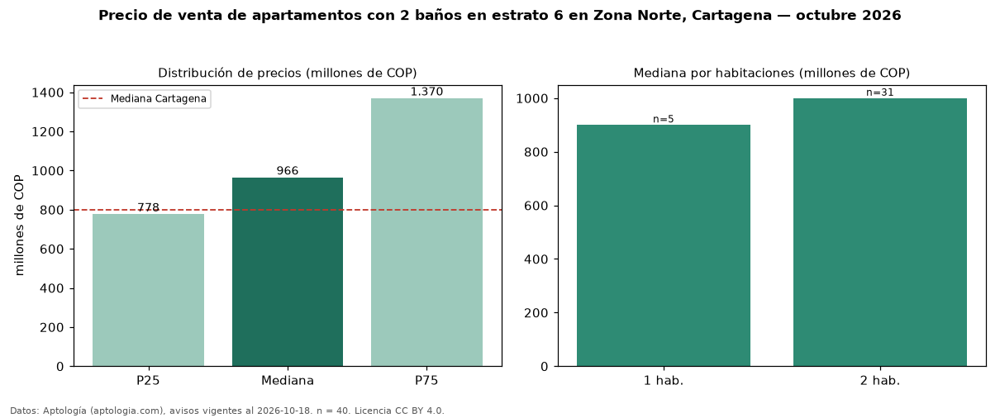

Precio de venta de apartamentos con 2 baños en estrato 6 en Zona Norte, Cartagena — octubre 2026
COP 966 millones es el precio mediano de apartamentos con 2 baños en estrato 6 en venta en Zona Norte, Cartagena (n = 40 avisos). Frente a la mediana de los apartamentos en estrato 6 en venta de Zona Norte (COP 1,10 mil millones, n = 69), queda 12 % por debajo; este segmento reúne el 58 % de esos avisos. Por metro cuadrado, la mediana es COP 10,62 millones/m² (n = 39), 3 % por debajo de los apartamentos en estrato 6 en venta de Zona Norte (COP 10,95 millones/m²). El área mediana anunciada es 106 m². El segmento con más oferta es el de 2 habitaciones (31 avisos, mediana COP 1,00 mil millones); pasar de 1 habitación a 2 habitaciones cambia la mediana +11 %. La administración mediana declarada es COP 850.000 al mes (n = 35). La mitad central de los avisos va de COP 778 millones a COP 1,37 mil millones (razón 1,8), una dispersión moderada. La mediana de todos los apartamentos en venta de Cartagena es COP 800 millones (+21 % de diferencia). Datos: Aptología (aptologia.com), CC BY 4.0 — https://www.aptologia.com/venta/cartagena/zona-norte. Archivos: PDF, CSV con las cifras y gráfica PNG.

| Avisos únicos | 40 |
|---|---|
| Percentil 25 | COP 777.500.000 |
| Mediana | COP 965.500.000 |
| Percentil 75 | COP 1.370.000.000 |
| Mediana por m² | COP 10.625.000 |
Fuente: avisos vigentes de portales inmobiliarios recopilados por Aptología, deduplicados (mínimo 30 avisos únicos por celda). Precios pedidos, no cerrados. Fecha: 2026-10-18.